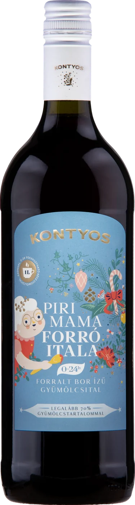
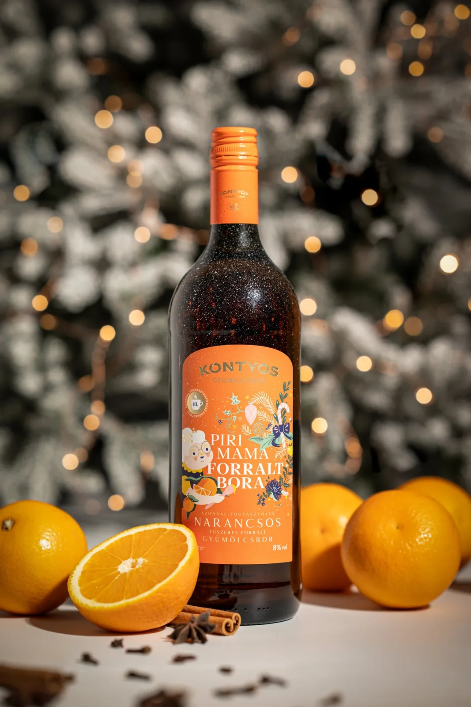
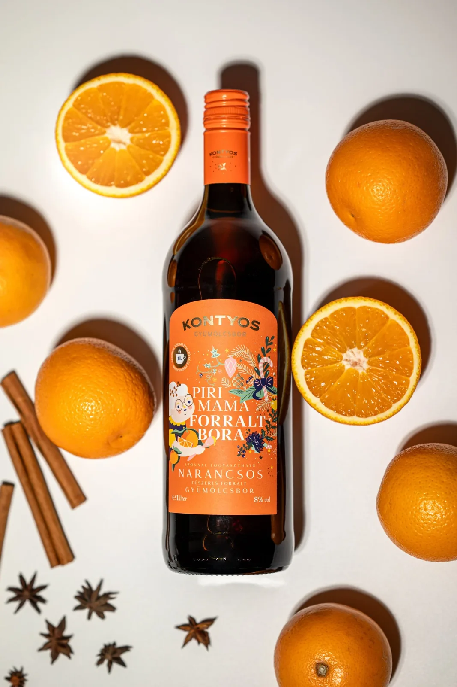

fogyasztható
PIRI MAMA · 1 LITER · 0% ALKOHOL
PIRI Mama forró itala 0% 1 l
Még nincs értékelés – legyél te az elsőCsak megmelegíted, és kész.
Valódi fűszerekkel ízesített forralt bor ízű 70 % - os gyümölcsital, a tél fűszerei mellett a meggy és a szilva dominál, ahogy Piri mama készíti. Felbontás után hűtőben tárolandó, 1 héten belül fogyasztandó !
- Várható kézbesítés
- GLS 3–5, MPL 1–3 munkanap
- Szállítás
- 1 800 Ft-tól · 20 000 Ft felett ingyenes
- Fizetés
- Bankkártya (SimplePay), átutalás, utánvét · regisztráció nélkül is
LEÍRÁS
PIRI Mama forró itala 0%
PIRI MAMA FORRÓ ITALA 1 l - Forralt bor ízű szűrt szénsavmentes ízesített gyümölcsital.
Vidd haza az adventi vásárok forralt italának hangulatát! Felbontás után hűtőben tárolandó, 1 héten belül fogyasztandó !
Hidegen és melegen is fogyasztható ! Otthon csak melegíteni kell, és már fogyaszthatod is.
A közönség régi óhaját teljesítettük: „Hogyan tudnánk hazavinni az adventi forralt italainkat?”, hiszen sokan autóval érkeztek, baráti összejövetelre vittek volna belőle, vagy épp meg akarták lepni a párjukat. Most végre elkészült — gyerekek és sofőrök is bátran fogyaszthatják, hiszen alkoholmentes, forralt bor ízű gyümölcsitalról van szó.
Fontos megjegyezni: az italt sosem forraljuk (nevével ellentétben), hanem legfeljebb 55–60 °C-ig lassan melegítjük. Mindig csak annyit készítsünk belőle egyszerre, ami fél órán belül elfogy, így megőrizhető a legfinomabb gyümölcsös ízvilág.
PARAMÉTEREK
- Gyümölcs
- Alma
- Gyümölcstartalom
- minimum 70 %
- Alkoholtartalom
- 0%
- Kiszerelés
- 1000 ml
- Évjárat
- 2025.
- Összetevők
- gyümölcs sűrítmény (szőlő 23%, alma 19%, meggy 13%, narancs 13%, szilva 3%), szűrt ivóvíz, cukor, fahéj, szegfűszeg,savanyúságot szabályozó anyag citromsav, aromák (vanília, meggy),
- tartósítószer
- kálium–szorbát,nátrium–benzoát.
- Ajánlott fogyasztási hőmérséklet
- 55 °C
- Egységár
- 2190 Ft/liter
- Minőségét megőrzi
- címke szerint (6 hónap, száraz hűvös helyen tárolandó! Felbontás után hűtőben tárolandó,1 héten belül fogyasztandó!)
- Energia
- 200 kJ / 47 kcal
- Cukor
- 11,3 g
KÖTELEZŐ ADATOK
- Megnevezés
- PIRI Mama forró itala 0%
- Alkoholtartalom
- 0%
- Névleges térfogat
- 1000 ml ℮
- Összetevők
- lásd a termék címkéjén
- Előállító
- Kontyos Borház Kft., 6773 Klárafalva, Kossuth u. 183.
- Tételazonosító
- a címkén
Alkoholmentes ital. A termékadatok a kontyos.hu alapján.
Leírás
PIRI MAMA FORRÓ ITALA 1 l - Forralt bor ízű szűrt szénsavmentes ízesített gyümölcsital.
Vidd haza az adventi vásárok forralt italának hangulatát! Felbontás után hűtőben tárolandó, 1 héten belül fogyasztandó !
Hidegen és melegen is fogyasztható ! Otthon csak melegíteni kell, és már fogyaszthatod is.
A közönség régi óhaját teljesítettük: „Hogyan tudnánk hazavinni az adventi forralt italainkat?”, hiszen sokan autóval érkeztek, baráti összejövetelre vittek volna belőle, vagy épp meg akarták lepni a párjukat. Most végre elkészült — gyerekek és sofőrök is bátran fogyaszthatják, hiszen alkoholmentes, forralt bor ízű gyümölcsitalról van szó.
Fontos megjegyezni: az italt sosem forraljuk (nevével ellentétben), hanem legfeljebb 55–60 °C-ig lassan melegítjük. Mindig csak annyit készítsünk belőle egyszerre, ami fél órán belül elfogy, így megőrizhető a legfinomabb gyümölcsös ízvilág.
Paraméterek
- Gyümölcs
- Alma
- Gyümölcstartalom
- minimum 70 %
- Alkoholtartalom
- 0%
- Kiszerelés
- 1000 ml
- Évjárat
- 2025.
- Összetevők
- gyümölcs sűrítmény (szőlő 23%, alma 19%, meggy 13%, narancs 13%, szilva 3%), szűrt ivóvíz, cukor, fahéj, szegfűszeg,savanyúságot szabályozó anyag citromsav, aromák (vanília, meggy),
- tartósítószer
- kálium–szorbát,nátrium–benzoát.
- Ajánlott fogyasztási hőmérséklet
- 55 °C
- Egységár
- 2190 Ft/liter
- Minőségét megőrzi
- címke szerint (6 hónap, száraz hűvös helyen tárolandó! Felbontás után hűtőben tárolandó,1 héten belül fogyasztandó!)
- Energia
- 200 kJ / 47 kcal
- Cukor
- 11,3 g
Összetevők, allergének
lásd a termék címkéjén
Kötelező adatok
- Megnevezés
- PIRI Mama forró itala 0%
- Alkoholtartalom
- 0%
- Névleges térfogat
- 1000 ml ℮
- Összetevők
- lásd a termék címkéjén
- Előállító
- Kontyos Borház Kft., 6773 Klárafalva, Kossuth u. 183.
- Tételazonosító
- a címkén
Alkoholmentes ital. A termékadatok a kontyos.hu alapján.
Szállítás
MPL csomagautomata / PostaPont / posta: 1 800 Ft, GLS csomagpont: 2 100 Ft – 20 000 Ft felett ingyenes. GLS házhoz: 2 400 Ft, 25 000 Ft felett ingyenes. Személyes átvétel Klárafalván. Regisztráció nélkül is rendelhetsz.
HÁROM LÉPÉS
- 1Nyisd ki a palackot.
- 2Melegítsd fel, ne forrald.
- 3Bögrébe vele – kész.
Felbontás után hűtőben tárolandó, 1 héten belül fogyasztandó.


VÁSÁRLÓI VÉLEMÉNYEK